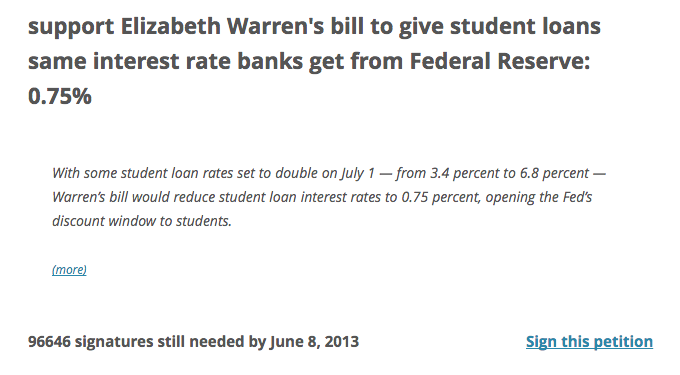

Goals of the plugin
- Make it as easy as possible for site owners to embed petitions
- Provide reasonable defaults but make them easy for developers to override
- Reduce impact on site performance
Default styles in TwentyTwelve

How the plugin works
[wtp-petition] shortcode- Sidebar widget
- Access to the API methods via the
$we_the_people global (for advanced users)
Highly themeable
WordPress-inspired template inheritance:
- wtp-petition-{id}.php (child theme)
- wtp-petition.php (child theme)
- wtp-petition-{id}.php (parent theme)
- wtp-petition.php (parent theme)
- templates/wtp-petition.php (plugin)
Performance
- Stores API responses as short-term transients
- Keeps long-term transients in case of API disruption
- Ajax results cached to prevent unnecessary calls